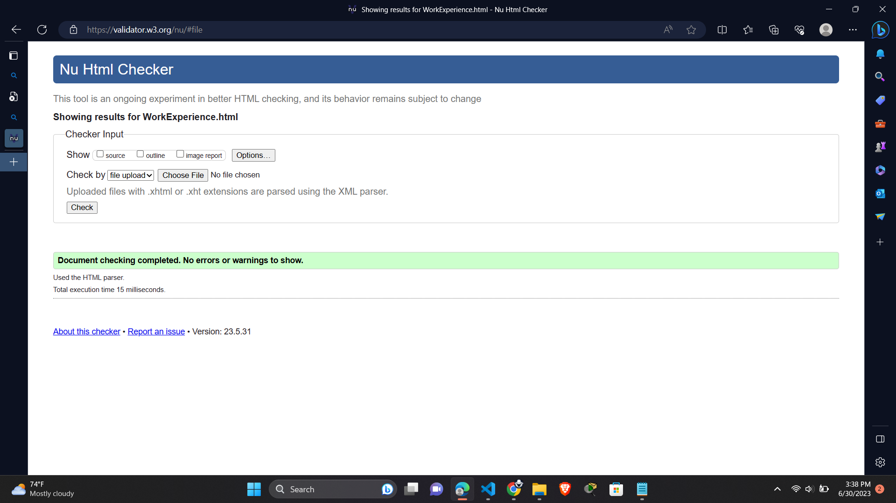
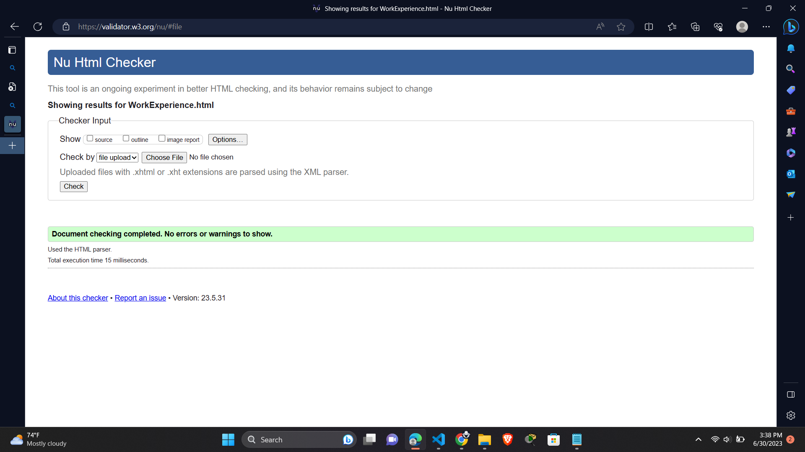

In this report, I will share my experience of learning the basics of web development and the process of designing, coding, and debugging a website. Throughout the module, I had ups and downs and faced many challenges, but the experience has been valuable in developing my skills.
Over the course of the module, I developed a website using HTML and CSS. The website focuses on showcasing my skills and experience, with a clean and minimalistic design that is easy to navigate. To achieve this, I chose a color scheme that is simple and easy on the eyes, with a font that is clear and easy to read.
In the early stages of development, I found it challenging to understand the technicalities of web development, but I gradually became more comfortable with coding and debugging. Through online tutorials and classes, I learned how to structure and style web pages, as well as how to incorporate responsive design.
Overall, I found the module to be challenging, but also extremely rewarding. I gained a better understanding of web development and the process of coding, designing, and debugging. I learned how to structure web pages using HTML and style them using CSS. I also gained an understanding of the importance of designing for a positive user experience.
Throughout the development of my website, I frequently checked the validation reports to ensure that my pages were HTML and CSS validated. Here are the screenshots of my validation reports:
If I validate my code using the Nu HTML checker and don't receive any errors, it indicates that my code is well-formed and adheres to the standards set by the World Wide Web Consortium (W3C). This ensures compatibility with various web browsers and improves accessibility and search engine optimization (SEO). It also reduces the likelihood of encountering compatibility issues in the future. Having valid code makes it easier for me to maintain, debug, and update my code, allowing me to focus on enhancing the functionality and user experience of my website. Overall, successfully validating my code with no errors assures me that my code is reliable and follows widely accepted standards.
 

If I validate my CSS code using a CSS validator and don't receive any errors, it indicates that my CSS code is well-formed and adheres to the CSS specifications. This ensures that my styles will be applied consistently across different web browsers and devices. Valid CSS code also helps in maintaining a clean and organized codebase, making it easier to debug and update styles in the future. By validating my CSS code, I can be confident that my styles are correctly written and follow the established standards, which contributes to a more reliable and professional website appearance.

In conclusion, this module has been a valuable experience for me, as I have gained a better understanding of web development, coding, and design. Throug the development of my website, I learned how to structure and style web pages,design for a positive user experience, and debug errors. I am excited to continue developing my skills in web development and design.